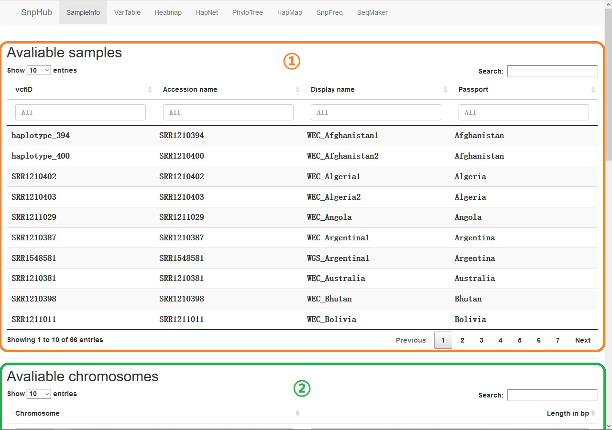
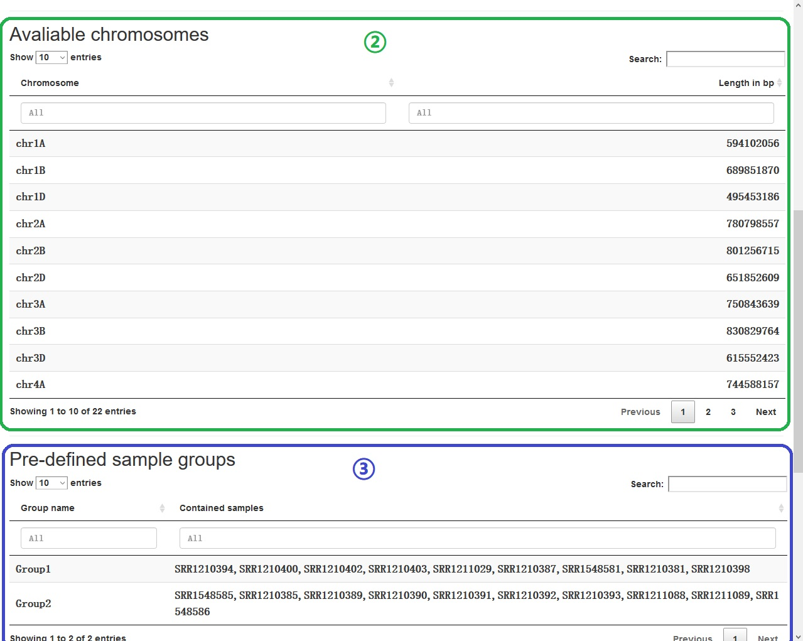
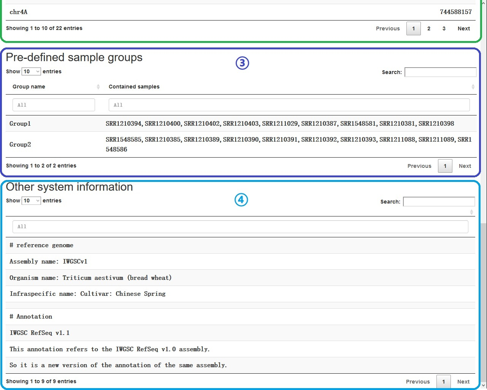

1. SampleInfo
The tag SampleInfo is the first functional tag, shows the state of the setups.

①: Avaliable samples shows all the samples that could use on the platform. The column
Accession nameis what the user input into the textbox, andDisplay nameis what the sample will appear on the plot as a result.②: Avaliable chromosomes shows all the avaliable chromsomes, as well as their length.

③: Pre-defined sample groups shows all the avaliable pre-defined groups. You can use them in
Samplestextbox by adding a hash tag before the group name, or input the group name directly inGroupstextbox.④: Other system informations shows some other information the administrator wants to show about the system or dataset or some other things.

All tables can be searched (right upper) or filtered (top of each column).
When you forget what to input, nor how to input, check here.